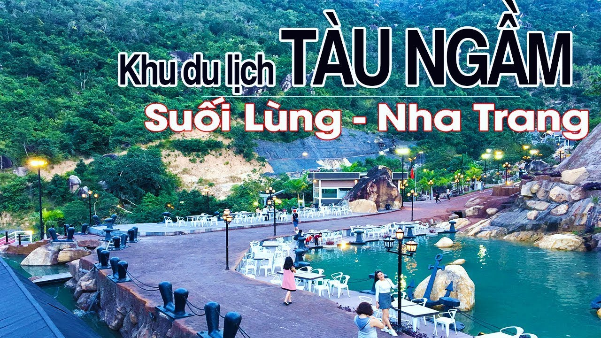
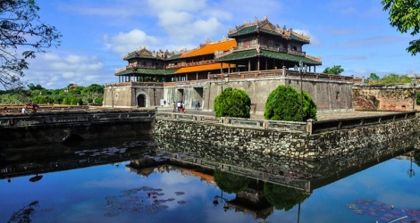

- 
Khu du lịch Nha Trang
Được mệnh danh là thiên đường miền nhiệt đới, sở hữu bãi biển tuyệt đẹp ngay trong thành phố, lại có Vịnh Nha Trang nổi tiếng nên du lịch Nha Trang chủ yếu là hoạt động vui chơi, giải trí gắn liền với biển đảo. Những bãi biển xinh đẹp luôn tràn ngập ánh nắng và nước biển trong xanh luôn là nơi thu hút nhất ở Nha Trang. Nhưng Nha Trang không chỉ có biển mà còn có những công trình văn hóa, di tích lịch sử đa dạng, gắn liền với lịch sử hình thành và phát triển của mảnh đất xinh đẹp này. Dưới đây là những điểm tham quan, vui chơi, giải trí hấp dẫn nhất Nha Trang. 
Đảo Phú Quốc
Hòn đảo đặc trưng rừng nhiệt đới hoang sơ, rạn san hô bị hư hại và bãi biển tuyệt vời. Một trong những bãi biển của nó, tên Bãi Dài (Bãi biển dài), được lựa chọn bởi ABC News là một trong năm bãi biển đẹp và sạch sẽ. Phú Quốc nổi tiếng với sản xuất nước mắm tốt nhất hoặc lên men nước mắm trên thế giới- 
Thừa Thiên Huế
Thừa Thiên - Huế là một tỉnh ven biển nằm ở vùng Bắc Trung Bộ, Việt Nam. Năm 2018, Thừa Thiên - Huế là đơn vị hành chính Việt Nam đông thứ 36 về số dân, xếp thứ 39 về Tổng sản phẩm trên địa bàn, xếp thứ 42 về GRDP bình quân đầu người, đứng thứ 52 về tốc độ tăng trưởng GRDP.
Right